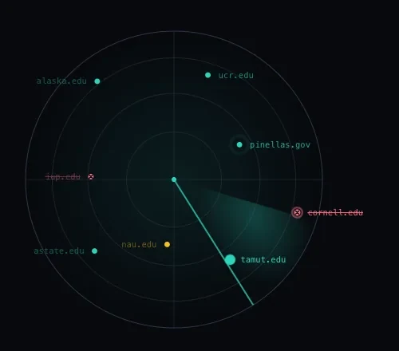
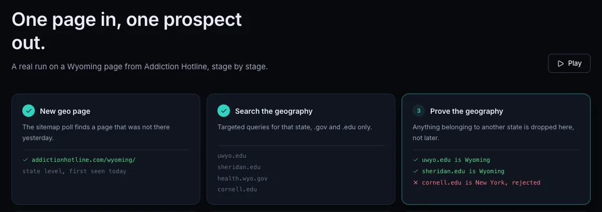

Problem
Inpatient Mental Health Finder publishes 6,299 location pages. For each one, the client wanted local .gov, .edu and nonprofit sites to ask for a link. For each site they needed the specific department page rather than the homepage, an email and phone, the population served, and whether it already links to any of 16 competitor directories. Doing that by hand across thousands of pages isn't realistic.

How it works
It watches both directories' sitemaps and runs only for newly published locations, with spend caps per run and per day. The schedule is paused for now. Candidates come from cached search results and are scored by named rules, not a model. There was no labelled data, and every flagged row has to be explainable. Pages are fetched with a plain client first, and with headless Chromium only when a government site blocks it. A Claude batch job proposes categories for the long tail of domains, and a category only changes after a person approves it. I also built a React and Postgres dashboard for tracking outreach. The delivered list itself is a Google Sheet.
Pipeline stages, in order:
- Watch sitemaps
- Search
- Prove geography
- Find the page
- Pull contact
- Check competitors
- Write row
What it guards against
Places with the same name in another state. Wyoming County, New York turned up for the state of Wyoming, and its pages mention "Wyoming" everywhere. The fix reads the state from the domain itself, using state portals, the federal .gov registry and College Scorecard data for universities. In the first production run it rejected 21 wrong-state candidates that a text check would have shipped.
How I know it works
A stratified sample of 225 of the 2,291 rows in the state-level delivery was classified against a fixed rule. Precision was 82.5%, and 17 of 17 in the high-trust band. All 265 competitor-link claims were then checked in a real browser. The project has 917 backend tests, 43 frontend tests and 42 written architecture decisions.

Result
After the first 72 locations it ran over all 99 state pages, and the final list is 2,237 rows. About 62% have an email and 84% a phone. A full county and city pass was priced at about $1,100 in search spend, and that is the client's call. A scheduled run with nothing new to process costs nothing.
Stack
Python, asyncio, httpx, Playwright, SerpAPI, Census API, Claude Message Batches, Postgres, FastAPI, React, Docker.